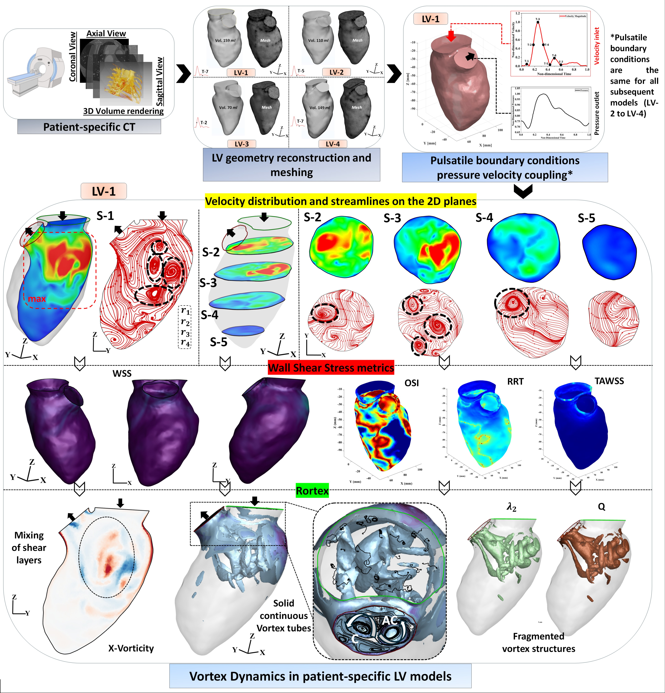
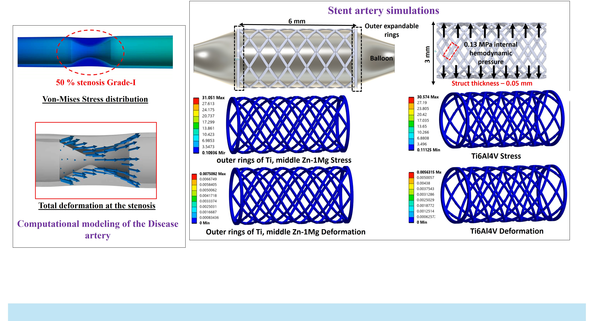
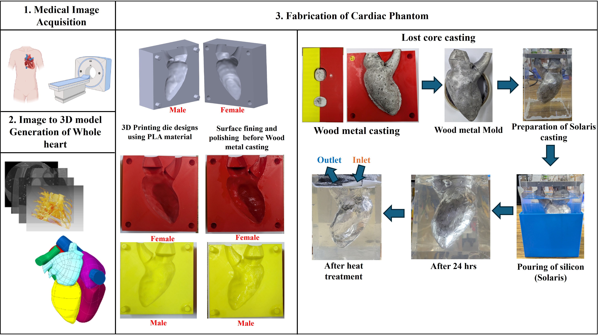

I am a PhD Researcher at IIT (BHU) Varanasi, specializing in computational biomechanics, fluid-structure interaction (FSI), and patient-specific cardiovascular modelling. My research integrates Computational Fluid Dynamics (CFD), experimental hemodynamics (PIV), and Physics-Informed Neural Networks (PINNs) to improve cardiovascular disease assessment and accelerate medical device development.
Investigating the coupled biomechanical and hemodynamic interplay of co-existing arterial pathologies using two-way Fluid-Structure Interaction (FSI) modelling under pulsatile flow conditions.
Pulsatile CFD
Simulating
Hemodynamics
Aneurysm Flow
Stenosis Flow
Comparative transient hemodynamic simulations capturing blood flow recirculation, wall shear stress gradients, and velocity jets across aneurysmal and stenosed arterial segments.
Cardiac Flow
LV Vortex
Dynamics

High-fidelity intraventricular flow analysis studying Left Ventricle (LV) vortex ring formation, propagation, and blood stasis to evaluate cardiac function and thrombus risk.
Medical Devices & FEA
Stent & Implant
Biomechanics

Structural optimization and finite element analysis (FEA) of endovascular stents and topology-optimized dental/orthopedic implants for superior stress distribution and osseointegration.
Experimental Fluid Mechanics
PIV
Validation

In-vitro experimental validation of computational hemodynamic models using Particle Image Velocimetry (PIV) in optically clear anatomical phantoms to verify complex flow topologies.
Scientific Machine Learning
PINNs for
Hemodynamics
Integrating Navier-Stokes governing equations into Physics-Informed Neural Networks (PINNs) for rapid, patient-specific surrogate modelling of cardiovascular flow fields and pressure gradients.
Selected Journal Publications
Bhattacharyya, A., Soni, P., et al. (2026). "Structural and functional optimization of bio ceramics, metallic oxides and nitrides coatings on topology optimized mandibular canine implant for enhanced biomechanical responses." Journal of the Australian Ceramic Society.
Soni, P., et al. (2024). "A comprehensive review of numerical methods, experimental validation, and emerging trends in left ventricle hemodynamics." Journal of the Brazilian Society of Mechanical Sciences and Engineering.
Soni, P., et al. (2023). "Development of a reduced-volume endosseous cuspid tooth implant for improved osseointegration using SIMP technique." Computer Methods in Biomechanics and Biomedical Engineering.